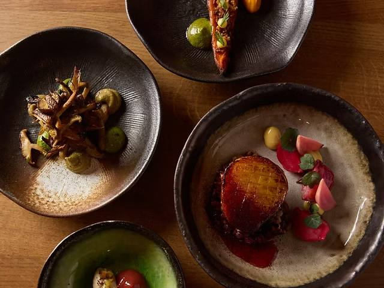

Menus
We use hyper-seasonal produce from farms that align with our values, and locally foraged ingredients, with a low-waste approach to cooking.
Any allergies? Please let your server know before ordering. Allergens are listed beside every dish.